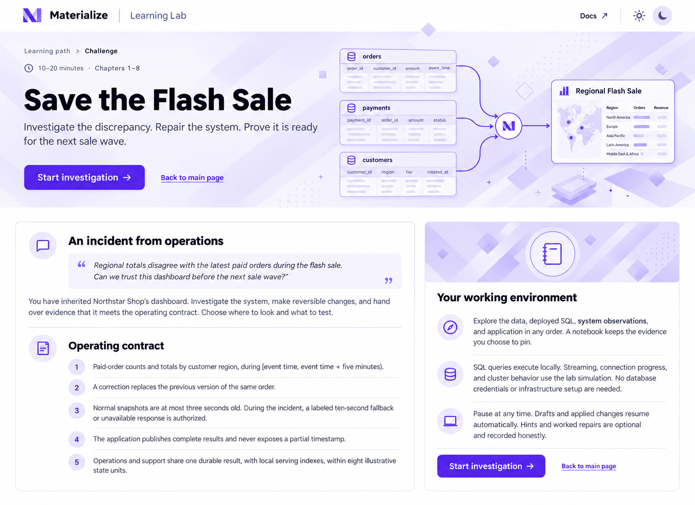
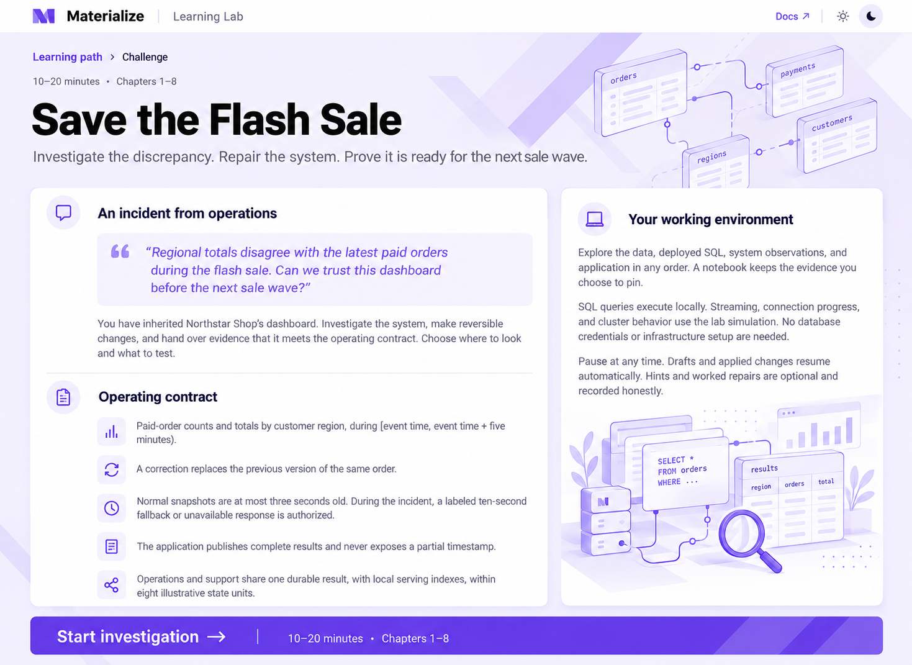
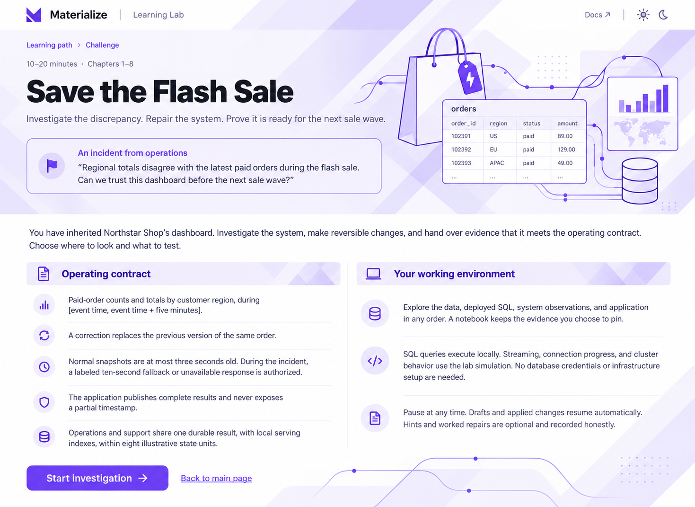
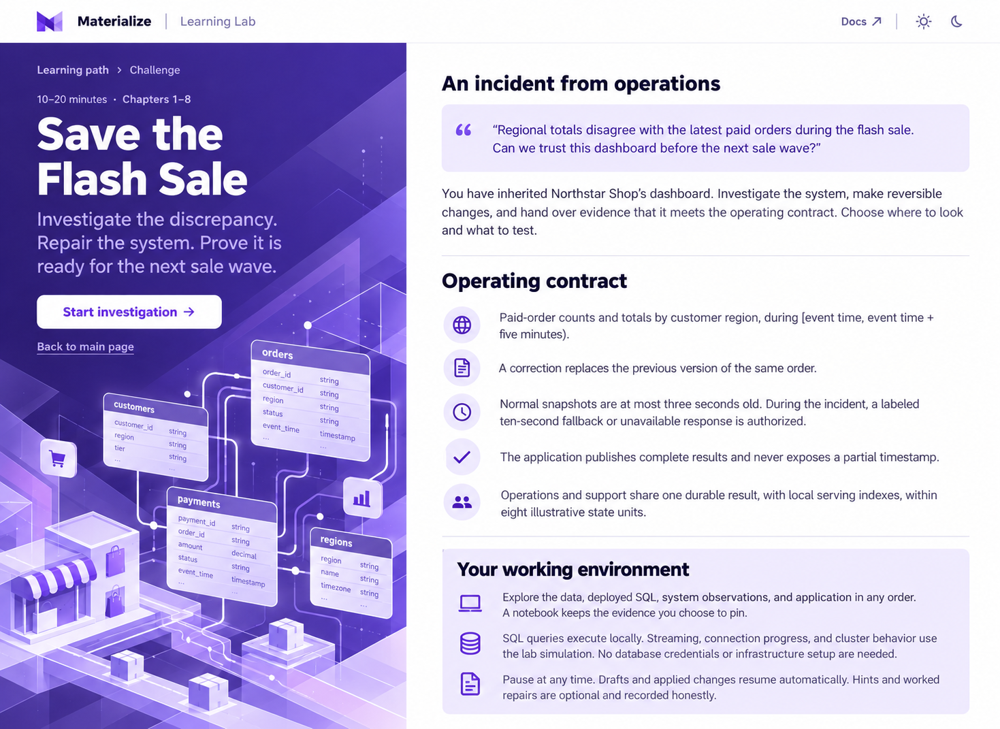
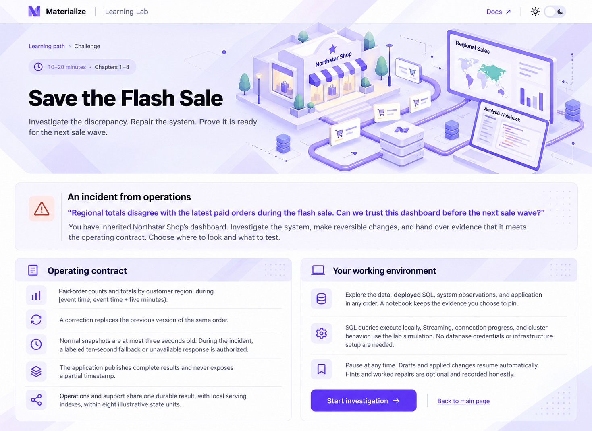

Five ways to open the challenge
Visual concepts for “Save the Flash Sale”. Each retains the incident, operating contract, and working-environment details. Generated with the built-in image tool. Click any mockup for the full-size image.
1. Flowing data
Illustrated data-flow hero and a patterned notebook panel.

2. Operations dossier
Operations briefing cards, query sheets, and a magnifying-glass illustration.

3. Patterned canvas
Lavender geometric ribbons, a commerce illustration, and clear text columns.

4. Bold split
Deep-purple story panel beside the complete white briefing surface.

5. Northstar Shop
An isometric Northstar shop with orders flowing into a regional dashboard.
